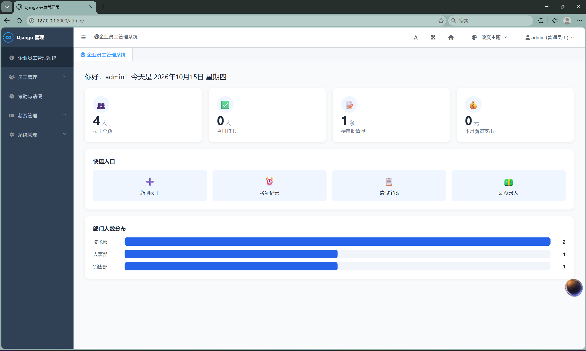
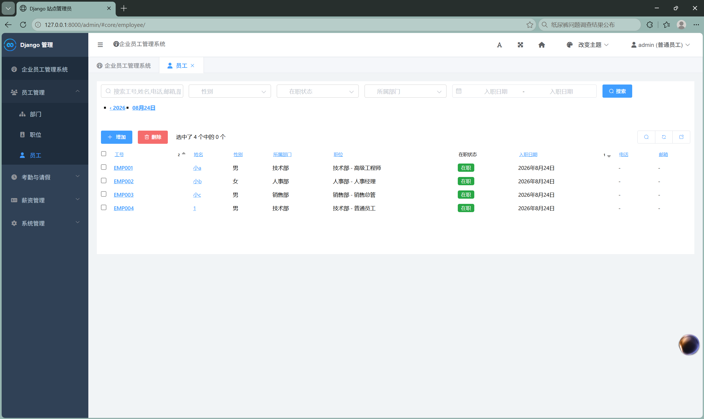
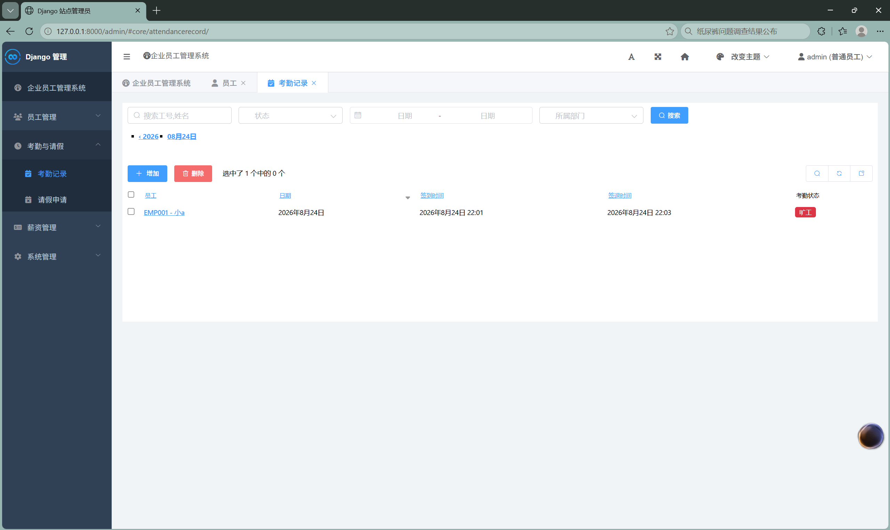
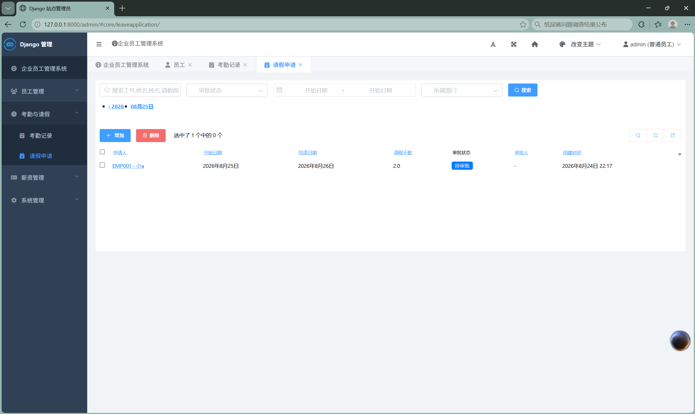

《书里窗外》（暂定名）
核心玩法：玩家在书页中操作道具，窗外现实随之改变。本质是利用视觉错位，把逻辑上不相连的平面在特定视角下连接起来，让角色通过。
游戏背景：埃拉拉是一个遭遇龙卷风的 12 岁农场女孩。在生命的最后关头，她幻想自己进入奇幻仙境。玩家以"兔子"身份，通过书页与她交流、帮她解谜。
我的职责：策划、关卡设计、叙事架构、系统设计、程序实现。
预计十一月份在ITCH.IO上线
预计十一月份上架steam商店页面
独立开发中的 2D 点击解谜剧情向游戏《书里窗外》（暂定名），我负责策划、关卡、叙事与程序。
核心玩法：玩家在书页中操作道具，窗外现实随之改变。本质是利用视觉错位，把逻辑上不相连的平面在特定视角下连接起来，让角色通过。
游戏背景：埃拉拉是一个遭遇龙卷风的 12 岁农场女孩。在生命的最后关头，她幻想自己进入奇幻仙境。玩家以"兔子"身份，通过书页与她交流、帮她解谜。
我的职责：策划、关卡设计、叙事架构、系统设计、程序实现。
叙事结构、核心玩法循环、三场景状态机。

翻页 = 开启一段新的故事；解谜 = 帮埃拉拉完成故事。将叙事与解谜深度融合。

观察窗外 → 进入书中操作 → 变量改变 → 窗外响应 → 解谜推进。

桌前 / 书中 / 窗外三个状态的切换条件与交互路径。
埃拉拉的角色设定与三视图。

12岁农场女孩。勇敢、好奇、爱冒险与幻想、喜欢兔子。
书页操作 → 窗外反馈。以下是实际运行录屏。

玩家拖动书页元素，窗外场景实时变化。

两个条件同时满足，窗外断裂平台连接。

书页中切换昼夜，窗外场景切换图层。
三个场景的实际游戏截图。

过渡场景，点击书或窗户进入对应画面。

玩家在此操作书页元素，改变窗外世界。

书页操作的结果在这里呈现，视觉错位在此发生。
30 秒核心玩法演示。
展示"书页操作 → 窗外变化 → 视觉错位解开"的完整流程。
视频嵌入位置（替换为 B站 iframe 或本地 video 标签）
全程记录游戏制作与迭代。最早期的三篇日志发布在CSDN上，往后的日志均为本站直接编写。
AI 开发实习期间，独立交付并上线一个完整的企业员工管理系统。核心锻炼的是需求拆解、规则设计与流程设计能力，其方法论可迁移至游戏系统策划。




设计核心：将业务拆解为部门、员工、考勤、请假、薪资、看板等 8 个功能模块，定义打卡状态判定规则（正常／迟到／旷工）、请假审批流程与薪资计算逻辑。
交付产出：7 张数据表、16 个 API 接口，以及功能规格说明书、架构设计、数据库设计、API 文档等完整设计文档。
系统、关卡、叙事——展示可迁移的设计分析能力。
叙事节奏、视觉表达与跨媒介尝试。
自学游戏策划与 Godot。创建了一个独立游戏工作室，正在开发第一款解谜剧情向作品。深度体验各大经典游戏作品，并持续输出系统拆解与叙事分析。
我希望进入游戏公司参与实际项目，学习系统策划、关卡设计与叙事落地的方法。
擅长：系统拆解、关卡节奏、叙事与玩法耦合、纸面原型、配置表设计。
工具：Godot、Figma、ProcessOn、Excel、VS Code。
求职意向：游戏策划（系统 / 关卡 / 文案方向）实习或初级岗位。可接受远程或郑州本地。